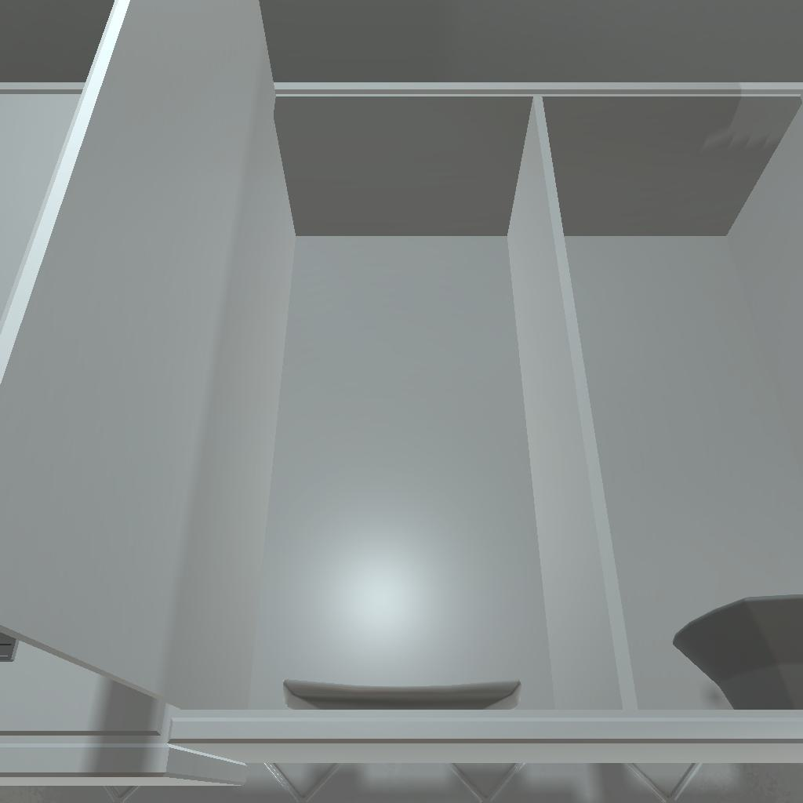

---------------------------------------------------------task: 21---------------------------------------------------------
--------------------------------------------------------------------------------------------------------------------------------------------------------------------
--------------------------------------------------------------------------------------------------------------------------------------------------------------------
Step:--------------------------------------------------------------------------16-------------------------------------------------------------------------------
----------------------------------------
VLM Prompt:
Image1:
Image2:
Image3:
**Instruction**
1. Analyze the provided images to identify all visible household objects and compare the difference between images (e.h. whether the object is opened or not and taken on hand or not), focusing on those relevant to the task description "heat some cup and put it in countertop."
2. Use the analysis of images and the task hint "The agent must find an object of the desired type, pick it up, go to a microwave, heat the object with the microwave, then find the correct location to place it, and put it down there. The agent does not need to use the microwave button or open the microwave to heat the object, and the agent just needs to do action that is "heat the object with the microwave"." to answer the question: what is the most reasonable action in the choices for the task description "heat some cup and put it in countertop"?
3. Decide and write the answer using the template: The answer is: (i): , where i is the real number. If there is no desired object in images, search every place based on **Initial Observation** to find the object. And if no one is exactly correct, choose a similar answer.
**Initial Observation**
You are in the middle of a room. Looking quickly around you, you can see cabinet (1-6), microwave (1), countertop (1-2), coffeemachine (1), toaster (1), sink (1), sinkbasin (1), fridge (1)
**Answer Choices**
(1): go to cabinet 1
(2): go to cabinet 3
(3): go to microwave 1
(4): go to cabinet 4
(5): go to cabinet 5
(6): go to cabinet 6
(7): go to countertop 1
(8): go to coffeemachine 1
(9): go to toaster 1
(10): go to countertop 2
(11): go to sink 1
(12): go to sinkbasin 1
(13): go to fridge 1
(14): open cabinet 2
(15): close cabinet 2
(16): take bowl 1 from cabinet 2
(17): take plate 1 from cabinet 2
**Answer**
Let's think step by step by following the instructions.
----------------------------------------
----------------------------------------
Original Response:
Firstly, we need to identify visible household objects in the images. Upon examining Image1, Image2, and Image3, it is apparent that these three images are identical and show the inside of a cabinet with a single bowl on the shelf. There are no cups visible in any of the images.
The task is to "heat some cup and put it in countertop." Since there is no cup visible in the cabinet, we must search other locations to find a cup. The task hint suggests that we don't need to interact with the microwave buttons or open the microwave; we just need to "heat the object with the microwave."
Based on the **Initial Observation**, the most reasonable first action would be to find a cup. Since the images do not show a cup in the visible cabinets, we should search other cabinets that have not been opened yet. Cabinet 1, 3, 4, 5, and 6 have not been mentioned in the images or the task hint as containing a cup, so we can eliminate those options. The microwave, countertop, coffeemachine, toaster, sink, sinkbasin, and fridge are also not mentioned as locations where a cup would be kept. Therefore, the most reasonable action would be to open cabinet 2, which has not been opened yet, in hopes of finding a cup there.
The answer is: (14): open cabinet 2.
----------------------------------------
----------------------------------------
>>> Refine Original VLM Response and Get Pure Action: open cabinet 2
----------------------------------------
-----------------------------------------------------------------
Running time: 72.53661894798279 seconds
Total Money: 13.366809999999996
-----------------------------------------------------------------
-----------------------------------------------------------------
Text Observation:You open the cabinet 2. The cabinet 2 is open. In it, you see a bowl 1, and a plate 1.
-----------------------------------------------------------------
UNSUCCEED